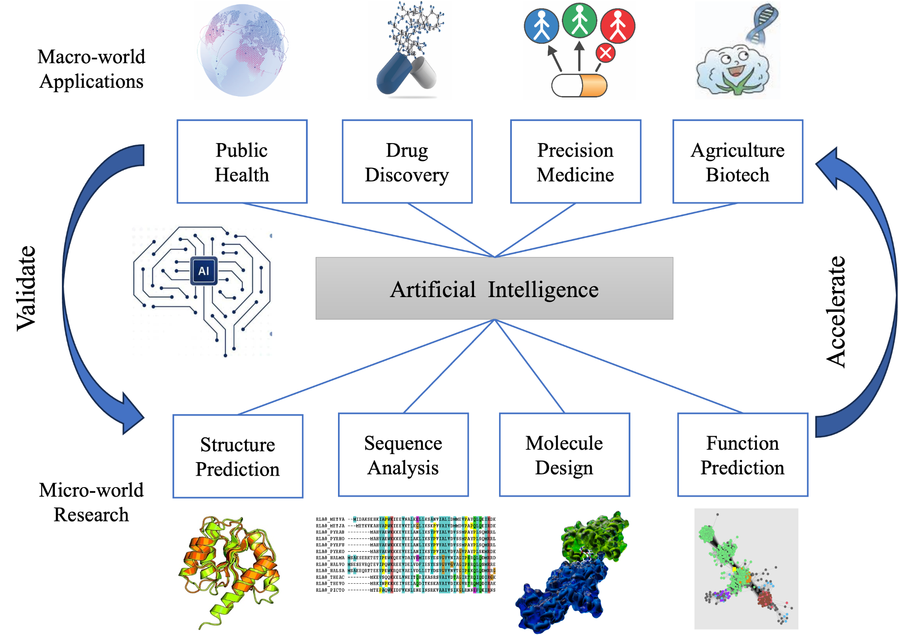

About me
I am an Assistant Professor and Principal Investigator at the School of Computing and Information Technology, Great Bay University, starting in Summer 2026. Previously, I was a research scientist at Shanghai Academy of AI for Science and Shanghai AI laboratory. I received my Ph.D. in Computer Science from The Chinese University of Hong Kong, advised by Prof. Yu Li and Prof. Irwin King. I received my B.S. in Mathematics from Shanghai Jiao Tong University.
My research develops artificial intelligence methods for computational biology, focusing on the structure and function modeling biomolecules. My previous work spans representation learning, biological foundation models, structure prediction, homolog retrieval, and molecular design, with highlighted works such as RhoFold, RNA-FM and DHR published in Nature Methods, Nature Biotechnology, Nature Computational Science, and top AI conferences.
My future research will address related challenging questions in biomolecular dynamics, focusing on multi-modal biological foundation models, conformational heterogeneity, cellular-context-aware modeling, RNA localization and function, molecular design, transcriptome-scale modeling, and virtual cell systems.
I am currently looking for motivated Master/PhD Students (Joint Program with SUSTech, HIT-SZ or CUHK-Shenzhen, etc), Research Assistants, and Visiting Students starting from 2026 fall and 2027. If you are interested, please feel free to send me an email!
Research interests
- Biological foundation models
- Structure modelling
- RNA–protein interaction
- Molecular design and computational biology
- Virtual cells
My research path

关于我
我于 2026 年夏天加入大湾区大学信息科学技术学院担任助理教授、独立 PI。在此之前，我曾在上海科学智能研究院和上海人工智能实验室担任研究员。我博士毕业于香港中文大学计算机科学专业，导师为 Yu Li 教授 和 Irwin King 教授；本科毕业于上海交通大学数学专业。
我的研究主要发展面向计算生物学的人工智能方法，重点关注 RNA、蛋白质等生物大分子的结构、互作与功能建模。此前工作围绕大分子表征学习、生物大模型、结构预测、同源检索和分子设计展开，相关代表性工作RhoFold, RNA-FM, DHR 发表于 Nature Methods、Nature Biotechnology、Nature Computational Science 等期刊以及人工智能顶会。
在此基础上，我的课题组未来将继续关注计算生物学中的关键难题，包括构建多模态的生物大模型、生物大分子建模的动态过程、构象异质性、细胞环境感知建模、RNA 定位与功能、分子设计、转录组尺度建模，以及面向虚拟细胞体系的分子层机制建模。
目前，课题组正在招收硕士博士生（湾大和南科大，哈工深，港中深等联合培养），科研助理，访问学生等，预计2026 fall或者2027开始。欢迎感兴趣的同学们邮件联系！
研究方向
- 生物大模型
- 结构预测
- RNA–蛋白互作
- 分子设计
- 虚拟细胞